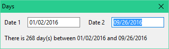
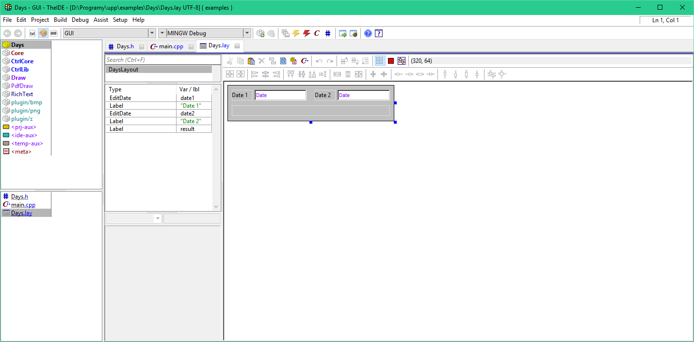
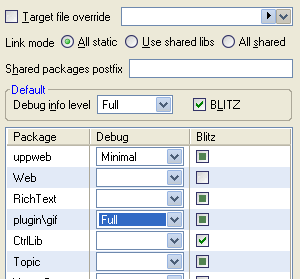
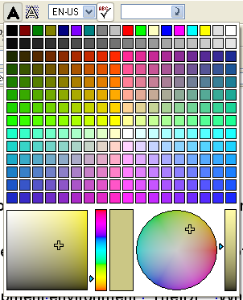
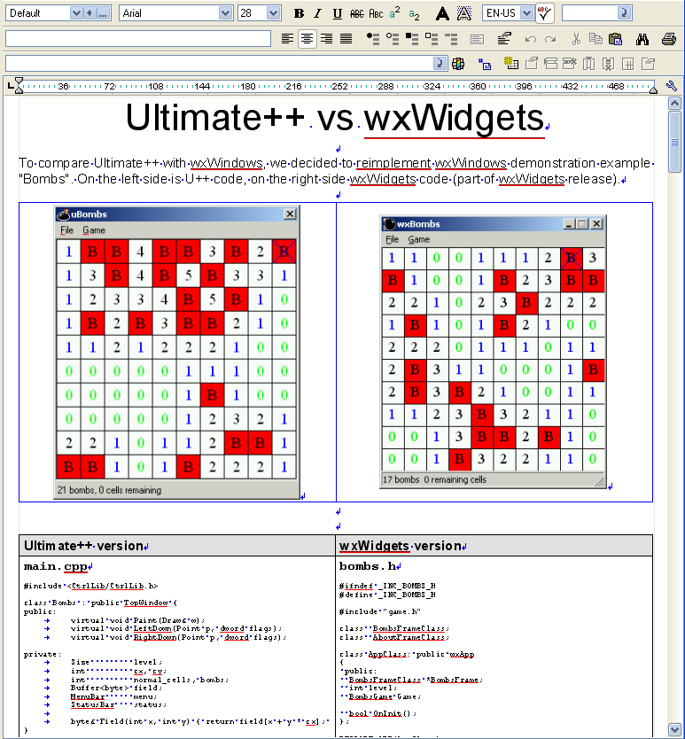

U++ Overview
Table of contents
1. Whetting your appetite
2. Everything belongs somewhere
3. U++ containers
4. Who owns widgets?
5. Dialog templates are C++ templates
6. Value and Null
7. Display and Convert
8. Function
9. U++ set of widgets
10. SQL programming
11. Summary
1. Whetting your appetite
U++ promises radical reduction of code complexity of typical desktop applications. Let us start with a simple example - an application that displays the number of days between two dates. The number of days is refreshed as user types or edits dates into the input fields:

The application window layout is created using U++ visual designer:

The actual code for the application is as complex as this:
#include <CtrlLib/CtrlLib.h>
#define LAYOUTFILE <Days/Days.lay>
#include <CtrlCore/lay.h>
class Days : public WithDaysLayout<TopWindow> {
public:
typedef Days CLASSNAME;
Days();
};
Days::Days()
{
CtrlLayout(*this, "Days");
date1 ^= date2 ^= [=] {
result = IsNull(date1) || IsNull(date2) ? "" :
Format("There is %d day(s) between %` and %`", abs(Date(~date1) - Date(~date2)), ~date1, ~date2);
};
}
GUI_APP_MAIN
{
Days().Run();
}
2. Everything belongs somewhere
In U++, most objects are bound to some logical scope. As a result, you will not see many new operators in code using U++ and almost no delete operators outside the implementation of containers.
That of course does not mean you are not allowed to use pointers, but it is good practice to use pointers just to point to things, never to manage heap resources. This also avoids all confusion regarding ownership of the underlying object, time of its deletion etc. If you need to manage data sets of variable size or polymorphic type, you should prefer using one of U++ containers.
Speaking about it, there are no shared smart pointers (like std::shared_ptr) in U++ used to manage heap resources at interface level. They are not needed and considered bad practice.
In C++, this approach proves to be equally good or better than garbage collected languages like Java or C#. While those languages are able to provide automatic management of heap resources, U++ approach provides very deterministic automatic management of all resources.
3. U++ containers
One aspect of U++ is bringing a lot of criticism: U++ is not using much of standard C++ library. There are, however, serious reasons for this. STL, with its devastating requirement that each element stored in container has to have copy-constructor, makes standard containers somewhat hard to use in GUI development.
There is no such general requirement for U++ containers. Instead, U++ containers come in two flavors.
Vector flavor has Moveable requirement that allows very fast implementation for certain types (e.g., element insertion at arbitrary position of U++ Vector<String> is much faster than the same operation with typical implementation of std::vector<std::string>).
Array flavor has no requirements for element types at all, at the price of somewhat lower performance.
As a result, in U++ you are for example allowed to create container of .GUI widgets that edits integer numbers ( Array<EditInt> integer_editors) and even sort it using standard U++ Sort algorithm. Doing something like this would require using pointers as elements in STL (std::vector<EditInt *>) or alternatively some sort of smart pointers (probably std::unique_ptr), but both increase code complexity and break the U++ rule according to which everything belongs somewhere.
4. Who owns widgets?
One of the things we discovered over our countless experiments with C++ GUI is the fact that the GUI toolkit should not own widget objects. GUI objects should be always owned by the client, belonging to some scope of client code (everything belongs somewhere). GUI toolkit just references them, it neither creates them nor destroys them. Each widget object can play its GUI role in some context (like being visible in some window), but at the same time it is always a stand-alone entity with its set of attributes that can be modified or queried regardless of its current GUI status.
This has many serious implications. The most important is that U++ does not require widget objects to be allocated on the heap. That in turn allows us to arrange GUI dialog structure in a very effective way, instead of
struct MyDialog {
Option *option;
EditField *edit;
Button *ok;
};
we are using:
struct MyDialog {
Option option;
EditField edit;
Button ok;
};
Even more important, lifetime of these widgets does not depend on the life cycle of MyDialog GUI - MyDialog can be closed or not yet open, but attributes of widgets are accessible all the time.
5. Dialog templates are C++ templates
Now that we have laid down the foundations, it is time to introduce the coolest aspect of U++ GUI programming - layout templates:
If you visually design a layout (usually, but not limited to, the layout of a dialog box) using TheIDE's Layout designer, this layout is in in your code reflected as a C++ template that derives from a widget-based class and declares all widgets as its member variables, and a matching function (InitLayout) that sets up the widget positions and their pre-designed attribute defaults.
For example, such a template would look like this:
template <class T>
struct WithMyDialogLayout : public T {
Option option;
EditField edit;
Button ok;
};
template <class T>
void InitLayout(WithMyDialogLayout<T> *layout, ...);
// implementation details omitted
The reason why it is provided as a template rather than a simple class or struct is that in this way you can use any widget type as its base class, not just the one that represents dialog windows (TopWindow).
This approach provides radical reduction of complexity - many annoying things that seem to be necessary to identify widgets in client code (like widget IDs or names) are simply gone for good. All you have to deal with in U++ are your instance variables.
6. Value and Null
One aspect that makes development in U++ very orthogonal is the existence of Value - the dynamically typed value type. Any of U++ basic types (int, double, String, Color, Rect, Font, Image etc...) can be stored into and retrieved from a Value. Value itself can be queried for the type of value it contains. It is also very easy to make any custom types Value-compatible.
Somewhat related to Value is the general concept of "empty value". The U++ special constant Null represents an empty value. Most concrete types support Null. Null is also defined for fundamental types - int, double and int64 - as a value that is lower than any other value for specific type (for example, Null is equal to INT_MIN for int). To test whether a variable of a certain type is Null, you can use the generic IsNull function.
Value (and Null) have a remarkable effect on GUI flexibility. Many widgets logically have their "natural" values, (for integer edit field it is the typed in number, for option widget it is either true or false according to its state) and U++ provides uniform access to these values via Value and GetData / SetData virtual methods. For example, clearing a dialog can be usually done by assigning Null to all of its widgets.
7. Display and Convert
Display and Convert based classes further enhance U++ flexibility using Value.
Convert classes act as bidirectional Value to Value converters. Usually, but not limited to, this conversion is between the value of a logical type and its textual representation (conversion of the textual representation to the logical type can be sometimes omitted). Examples are ConvertInt or ConvertDate.
Many U++ widgets are able to use these Convert classes as properties. An example is the EditField class, a generic input field. By assigning specific Convert based class to EditField, you can "teach" it to edit numbers, dates or anything that has textual representation.
Somewhat similar to Convert classes are Display based classes. These are classes that describe how Values should be displayed. Once again, many U++ widgets are using Display classes as their properties. For example, to "teach" the DropList widget (DropList is close to something called "combo box" on other platforms) to display colors, all you need to do is to set its Display attribute to DisplayColor (remember, Color is Value compatible and DropList's list consists of Values). Meanwhile, you can use the same DisplayColor as the property of many other widget classes.
8. Function
While virtual methods provide a great way to organize the input interface of GUI widgets (like mouse or keyboard input), each GUI toolkit has to provide effective means for output interfaces as well (if you do not know what output interface is: when a button widget is pressed, the output interface is responsible for delivering this information to the client code).
Our solution to these needs is using std::function equivalent Upp::Function. All output actions then can be defined as C++ lambdas. The reason for not using std::function is that in GUI, a lot of output events remain unassigned and std::functions throws when invoked empty - Upp::Function simply does nothing.
9. U++ set of widgets
While the standard set of U++ widgets is less important to us than the general principles, partly due to the fact that creating new widget classes is often a trivial task in U++, any description of toolkit would be incomplete without it.
So here follows an incomplete but representative list:
Label, Button and Option are basic well known widgets.
Switch is something usually called "a group of radio-buttons", anyway in the U++ this is a single widget (this way, reading the Value of a switch is much more consistent).
EditField, EditInt, EditDouble, EditIntSpin, EditDate, EditString are basic input fields. Note that U++ provides distinct types of input fields for specific value types.
LineEdit and DocEdit are two kinds of plain text editors. LineEdit works with lines while DocEdit works with paragraphs.
ScrollBar and ScrollBars. While their names are self-explaining (ScrollBars is just pair a consisting of a vertical and horizontal ScrollBar), it is worth noting that the U++ ScrollBar also provides all calculations for position of view area.
Slider is an "analog" input widget whose value is determined by position of "thumb".
HeaderCtrl represents headers of various tables, namely ArrayCtrl
ArrayCtrl is perhaps the most complex and complicated widget in U++. It is basically a table widget used to operate on Value matrices. It can combine Values to be displayed (using Display class) as columns (yes, several Values in row can be combined into single a column using Convert if needed) and edit them using slave Ctrls (those can be inside the table displayed on user "edit" action, inside the table always visible or outside the table in the dialog box displaying Values of currently selected line).

Option, EditString, DropList, Switch and ArrayCtrl in action.
SqlArray is derived from ArrayCtrl and adds abilities to act as SQL table editor, including master-detail capabilities.
Splitter is used to implement split view widgets with an adjustable bar.
ProgressIndicator can be used to indicate progress of lengthy operations.
TabCtrl is used for dialogs with tabs.
TreeCtrl is used to display arbitrary tree hierarchies.
ColorSelector, ColorPusher and ColorButton are widgets for graphical user color selection.

ColorButton
MenuBar and ToolBar handling is a little unorthodox in U++, as the menu actions, represented as Callbacks, are passed to the methods constructing the corresponding Bar. This has some serious advantages - state and presence of individual buttons or menu bar items can be easily adjusted according to the current application state. It is also often possible to have a single method for construction of both ToolBar and MenuBar.
ColumnList displays values in user-adjustable number of columns.
FileList is variant of ColumnList for displaying lists of files.
Finally, U++ has tools to deal with advanced text formatting:
RichText is a class that provides storage of complex text documents, including font and paragraph formatting and even nested tables support.
RichTextView is a widget for viewing RichText texts.
RichEdit is a full-featured RichText word-processor (including spell-checker) in standard widget package, readily available to any U++ application.

RichEdit
You can find complete alphabetical list of basic U++ widgets here.
10. SQL programming
One of the motivations behind U++ always used to be the development of enterprise class client-server SQL applications. Using general U++ philosophy we believe to have achieved some extraordinary results, basically making U++/SQL development easier that using SQL dedicated development tools.
Of course, SQL is an area where the Value abstraction hugely pays off. Fetching database values and putting them to GUI widgets never was as trivial as it is in U++.
An important tool related to SQL is idea of "SQL expressions". SQL expression is entity that represents SQL command. U++ provides means to build SQL expression using C++ overloading mechanism. For example, U++ SQL expression might look like:
Select(NAME, SURNAME).From(PERSON).Where(PERSONID == personid);
where NAME, SURNAME, PERSON and PERSON are special values of SqlId type, while personid is an ordinary C++ variable. The important thing here is that SQL expressions can be built from smaller subexpressions - that is particulary important when building Where conditions.
SqlBool where;
if(!IsNull(findname))
where = NAME == findname;
if(!IsNull(findsurname))
where = where && SURNAME == findsurname;
SqlExp exp = Select(PERSONID).From(PERSON).Where(where);
When SQL expression is ready for execution, it can be executed on an Sql cursor object using the * operator. After this, you can Fetch the results.
Sql sql;
sql * exp;
while(sql.Fetch()) {
Sql sqlu;
sqlu * Update(PERSON)(SALARY, SALARY + 100).Where(PERSONID == sql[0])
}
Another effective tool is the concept of database schema description files. These are files used to describe a database model using specialized C-macro constructions:
TABLE_(PERSON)
INT_ (PERSONID) PRIMARY_KEY
STRING_ (NAME, 200)
STRING_ (SURNAME, 200)
DOUBLE_ (SALARY)
END_TABLE
These description files are then used to synchronize the database model on the SQL server, to generate SqlId constants used in SQL expressions, and, last but not least, to generate C++ structures (named after the tables with S_ prefix) that can be used to form SQL expressions and to fetch query results:
S_PERSON person;
SQL * Select(person).From(PERSON);
while(SQL.Fetch(person))
person_table.Add(person.PERSONID, person.NAME, person.SURNAME);
Thanks to the Value concept described above, most widgets couple seamlessly with SQL code out of box. One of the tools that exploit these capabilities is the SqlCtrls class that orchestrates the data interchange between dialog widgets and database records:
void EditPerson(int persionid) {
WithPersonLayout<TopWindow> dlg;
SqlCtrls ctrls;
ctrls(PERSON, dlg.person)(NAME, dlg.name)(SURNAME, dlg.surname);
SQL * Select(ctrls).From(PERSON).Where(PERSONID == personid);
ctrls.Fetch(SQL);
if(dlg.Run() == IDOK)
SQL * ctrls.Update(PERSON).Where(PERSONID == personid);
}
11. Summary
In this overview we have tried to summarize the most exciting features of U++. There are of course many more important features including certain interesting implementation techniques like zero overhead memory allocator, perfect image rescaling etc.
Since the very beginning we have kept using U++ ourselves to develop applications for our customers. Even so, in recent years we never hesitated to compromise our entire code-base each time we felt that some major or minor aspect of library interface or implementation needed to be improved. This enabled us to slowly develop the library and perfect it into its current state.
Now, after some more than 2 decades of development, U++ is a mature platform that brings vast reductions of development costs. Most interfaces seem to be finished and optimal. There is of course still some work ahead, mostly in documentation an IDE department.
If you find our U++ way of programming interesting, nothing stays in your way to downloading it. But be careful there: you should be prepared to throw away some old habits and usual ways of thinking about how "things are always done", or they might ruin your opportunity to receive a lot in the reward, together with a healthy disrespect to certain honorable, well-established development tools.
|


{kind=link}
{kind=link}
{kind=link}
{kind=link}
{kind=link}